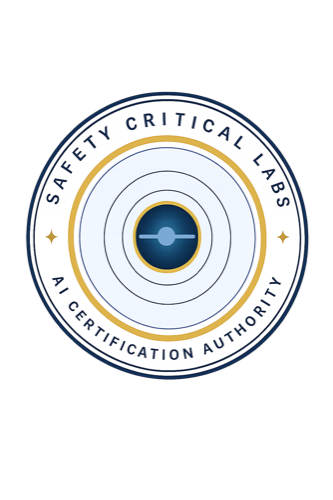

Safety Critical Labs. AI certification for safety critical systems.
Safety Critical Labs
AI Certification Authority

Certificate of Conformance
This is to certify that
System Name
Organization · Version X.X · Assessed Month YYYY
has been formally assessed against the
SCL AI Requirements Framework
and certified at the Safety Critical level for the operational claim stated below.
Operational Claim
One sentence operational claim describing the certified role and intended scope of the system.
Certificate No.
SCL-CERT-2025-001
Issued
DD Mon YYYY
Framework DOI
10.5281/zenodo.20692967
Principal
Safety Critical Labs
Independent Certification · Safety Critical Labs
Safety Critical Labs
Conformance Verification
Assessed Requirement Areas
AI-1Operational and data foundations
AI-2Addressing AI bias
AI-3ML test coverage
AI-4Continuous validation
AI-5Hallucination prevention
AI-6Out of distribution detection
AI-7Adversarial robustness
AI-8Explainability
AI-9Human and AI teaming
AI-10Privacy and data protection
AI-11Multi-model systems
AI-12Neural network requirements
AI-13Continuous learning and adaptation
Evaluated across all thirteen areas of the SCL AI Requirements Framework. Scan to confirm this record against the public register.
Independent Certification · Safety Critical Labs